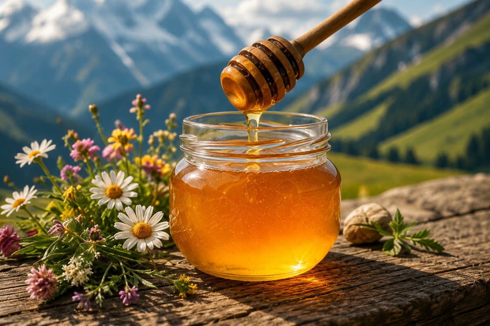
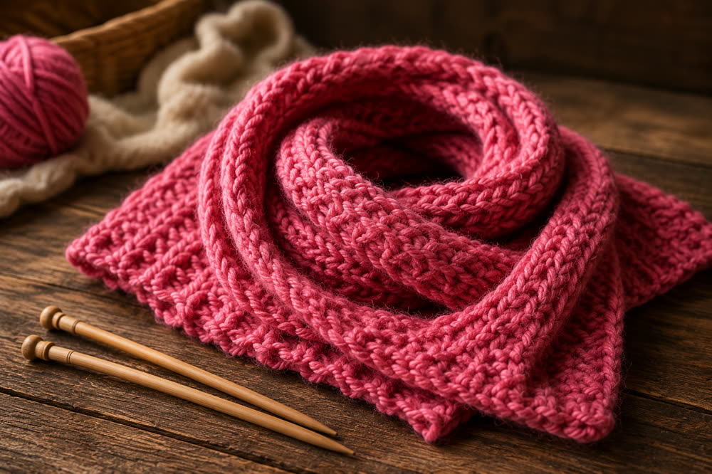
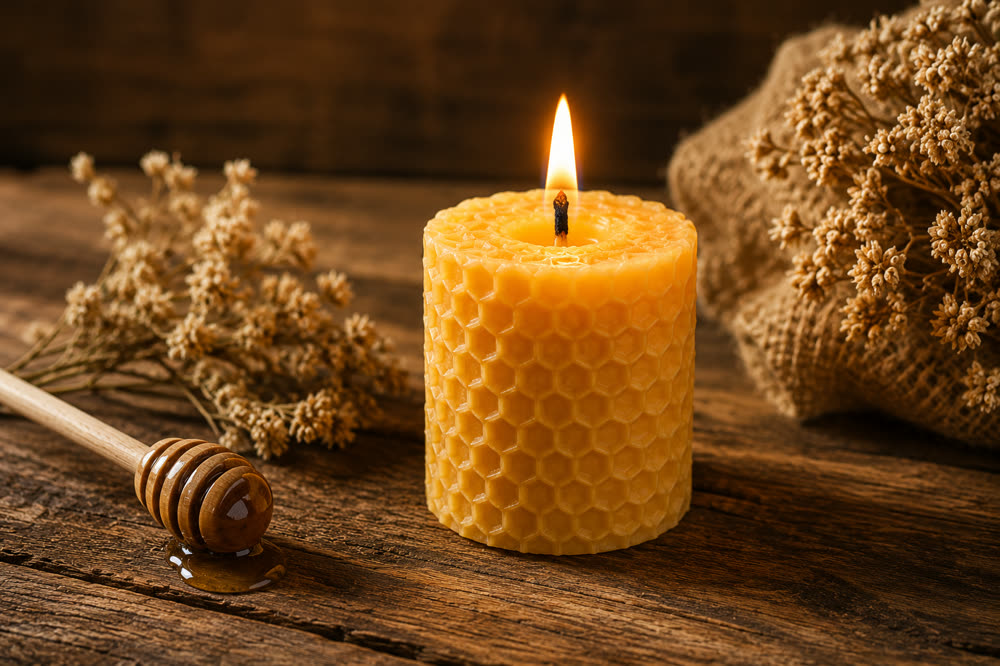
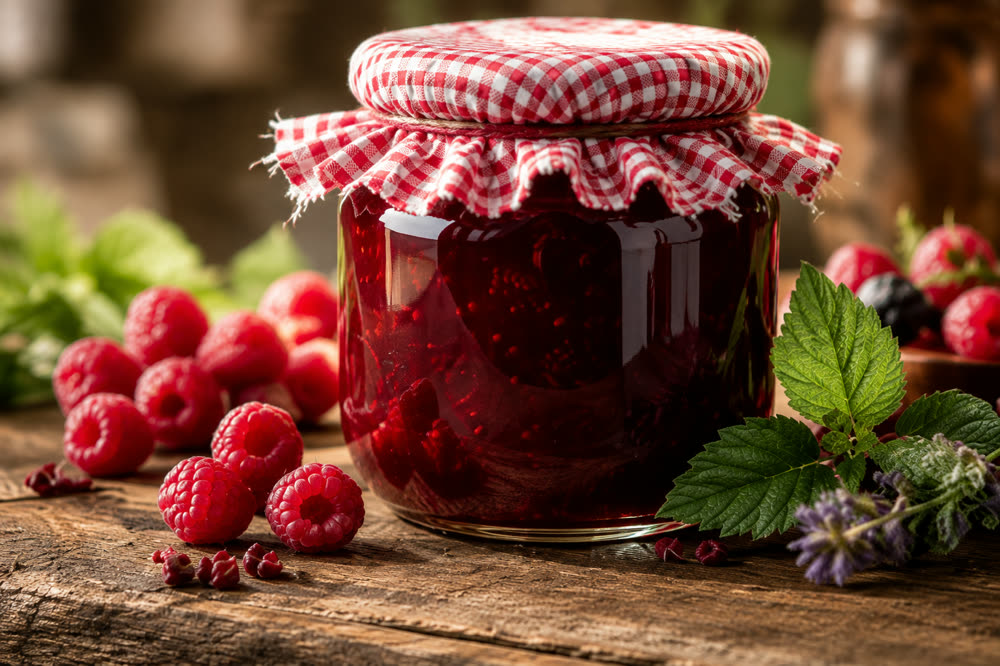
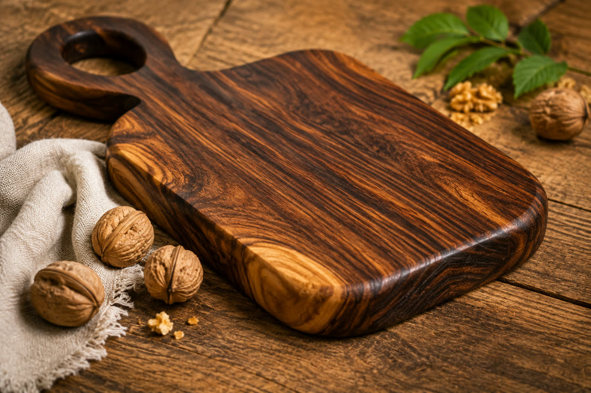
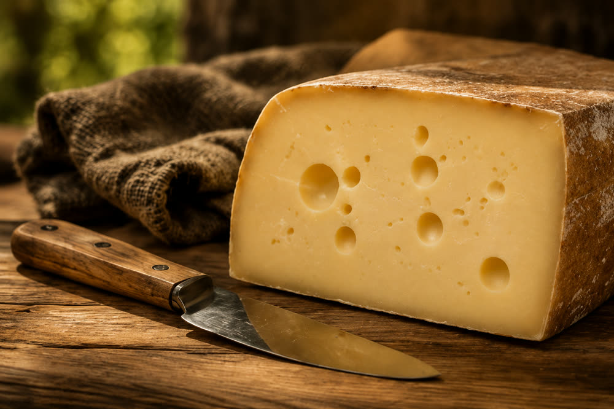
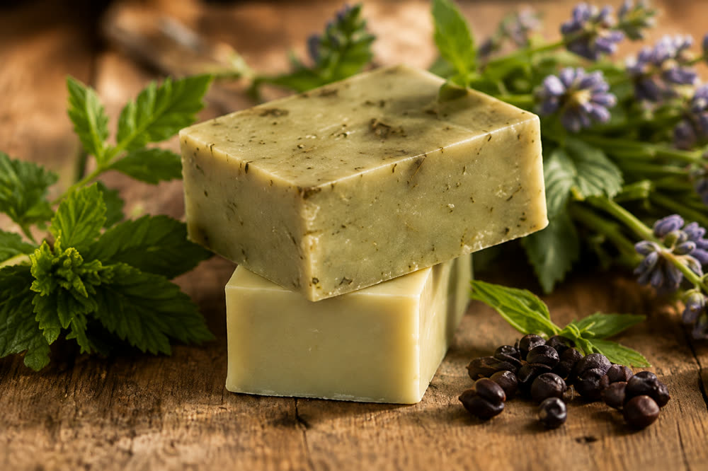
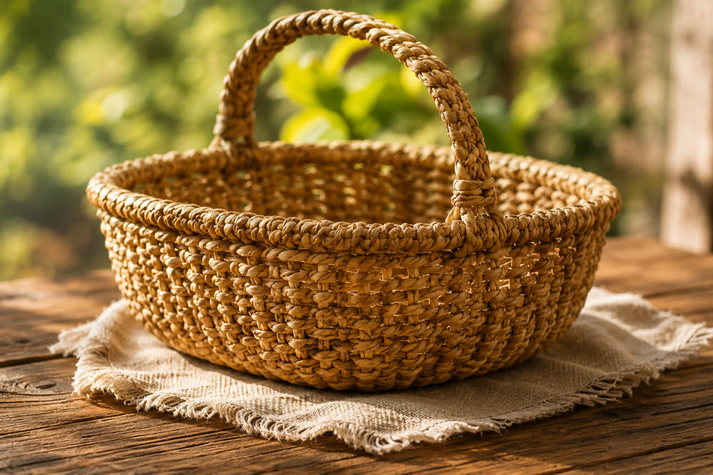

Bergblüten-Honig
Sortenreiner Honig von freilaufenden Bienenvölkern aus dem Alpenvorland, kaltgeschleudert und unbehandelt.
Handgemacht & regional · seit 1987
Im Kramladen Nussbaum finden Sie feine Delikatessen, liebevolle Geschenkideen und echtes Kunsthandwerk — alles von Menschen gemacht, die wir persönlich kennen. Kommen Sie vorbei, stöbern Sie durch unser Sortiment und lassen Sie sich überraschen.
Unser Sortiment
Eine kleine Auswahl aus unserem Laden — jedes Stück hat eine Geschichte und stammt von Produzentinnen und Produzenten aus der Region.

Sortenreiner Honig von freilaufenden Bienenvölkern aus dem Alpenvorland, kaltgeschleudert und unbehandelt.

Aus reiner Schweizer Wolle, auf dem traditionellen Stuhl gestrickt — jedes Exemplar ein Unikat.

Handgegossen aus reinem Bienenwachs, mit dezentem Honigduft und langer Brenndauer.

Von Hand gepflückte Beeren, traditionell im Kupferkessel eingekocht — herrlich fruchtig.

Aus heimischem Nussbaumholz gefertigt, geölt und griffbereit — für Küche und Apéro.

Würziger Bergkäse aus Rohmilch, mindestens zwölf Monate in unserem Kellergewölbe gereift.

Kaltgerührt mit Bergkräutern und Olivenöl, ganz ohne künstliche Zusätze.

Aus Weidenruten von Hand geflochten — praktisch für Markt, Picknick oder als Geschenkkorb.
Unsere Geschichte
Der Kramladen Nussbaum wurde 1987 von Verena Nussbaum in einer kleinen Seitengasse eröffnet — als Ort, an dem man findet, was man in keinem Grossverteiler bekommt: echte Handarbeit, ehrliche Produkte und ein offenes Ohr für eine gute Geschichte.
Heute führt ihre Tochter den Laden weiter, zusammen mit einem kleinen Team, das die Produzentinnen und Produzenten aus der Region persönlich kennt. Jedes Stück, das bei uns über die Theke geht, hat einen Namen und eine Geschichte dahinter.
Wir glauben an kurze Wege, faire Preise für Handwerk und daran, dass ein Laden mehr sein kann als ein Ort zum Einkaufen — nämlich ein Ort zum Verweilen.
Produkte aus einem Umkreis von höchstens 80 Kilometern.
Kein Fliessband — jedes Stück entsteht in Handarbeit.
Wir kennen unsere Produzentinnen und Produzenten beim Namen.
Besuchen Sie uns
Telefon: 033 822 00 00
E-Mail: hallo@kramladen-nussbaum.ch
| Montag | geschlossen |
|---|---|
| Dienstag – Freitag | 09:00 – 18:30 |
| Samstag | 08:30 – 16:00 |
| Sonntag | geschlossen |